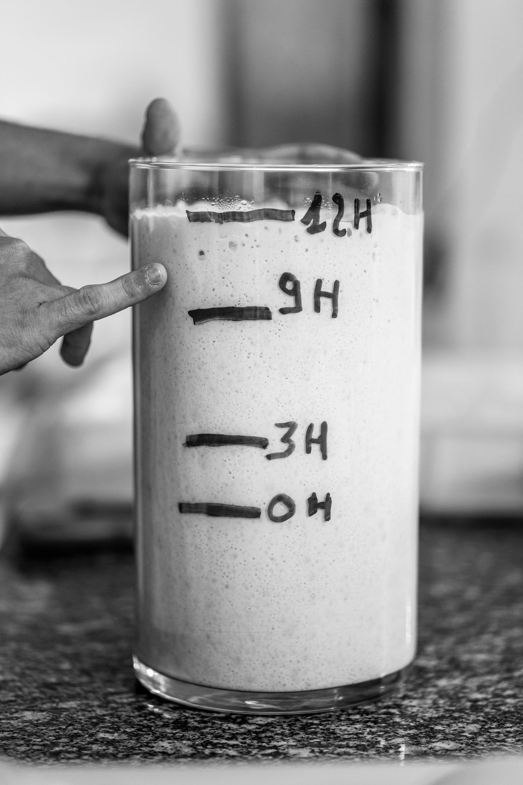
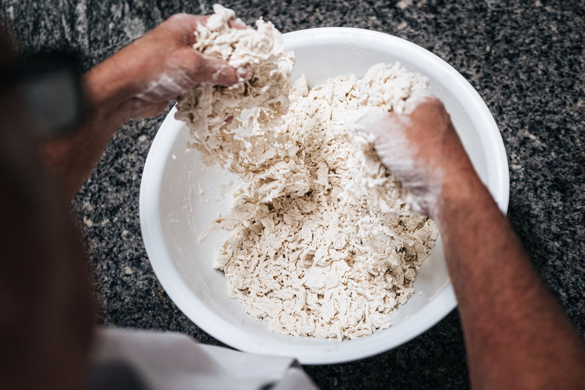
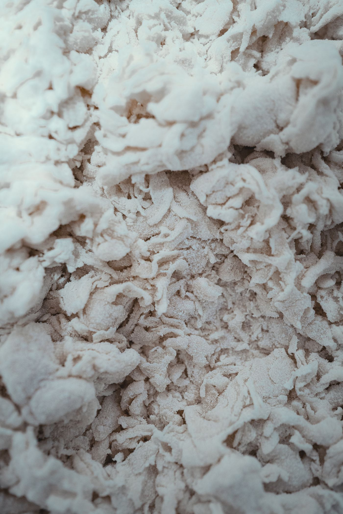

Objectif de la formationRéaliser des empâtements indirects — Poolish, Biga, Contemporaine.
École Pizzaïolo Jean-Jacques Despaux · SIRET 879 955 136 00012 · NAF 8559A
NDA 76 65 00989 65 auprès du préfet de la région Occitanie
101 rue Alsace Lorraine, 65300 Lannemezan · contact@ecole-pizza.com
Version 2.0 Mise à jour le 14/01/2026
Niveau II Empâtements indirectsSommaire
Formation · Prérequis : Niveau I ou Niveau I Pro
Sommaire
1.Préface1
2.Tenue professionnelle2
3.Schéma des formations3
4.Le type de farine (raffinage)4
5.L'indice de force de la farine (W)5
6.La levure7
7.L'eau10
8.Le sel12
9.L'huile13
10.Les substitutions15
11.Les adjonctions16
12.Les unités de calcul17
13.Poolish & Biga18
14.Le Poolish19
15.La Biga21
16.La pizza contemporaine24
17.Différences entre les empâtements29
18.Quiz — le type de farine30
19.Lexique31
20.L'équipe École Pizza33
École Pizzaïolo Jean-Jacques Despaux · Mise à jour le 14/01/2026
Niveau II Empâtements indirectsPréface
1
Préface
Tombé amoureux de la cuisine dans mon enfance, j'ai eu de nombreuses
expériences dans le monde de la restauration.
Quand je me convertis au métier de pizzaïolo, je ne me doute pas de la richesse
de ce savoir-faire.
C'est grâce aux championnats du monde de la pizza, puis au Championnat de France,
que ma technique s'est étoffée.
Au travers de mes formations, je partage avec vous mes techniques, mon savoir-faire
et ma passion des bonnes choses.
Jean-Jacques Despaux Maître Artisan Pizzaïolo · Maître Instructeur Pizzaïolo
Président de l'École Pizza
Ce manuel
Ce document est le support pédagogique remis à chaque stagiaire.
Il suit l'ordre de la formation : les matières premières d'abord, le protocole ensuite,
la cuisson et l'organisation pour finir. Les pages « Notes » sont faites pour être
écrites — les valeurs relevées pendant le stage n'ont de valeur que notées.
Niveau II Empâtements indirectsTenue professionnelle
2
Tenue professionnelle
La tenue est l'image de l'entreprise. Tout professionnel de la restauration se tient d'avoir une tenue propre.
La tenue est obligatoire
Veste blanche de cuisinier, tee-shirt ou polo
Pantalon de cuisine (jean toléré)
Chaussures de sécurité
Tablier
Torchon
Dans les locaux
Pas de bijoux — l'alliance est tolérée
Interdiction de fumer dans les locaux
Cheveux attachés, ongles courts et sans vernis
Pourquoi c'est une règle et pas un conseil
Une bague retient les résidus de
pâte et se retrouve dans le produit ; une chaussure de ville ne protège pas d'une plaque
sortie du four à 320 °C. La tenue relève de la sécurité au poste autant que de
l'hygiène alimentaire.
Niveau II Empâtements indirectsSchéma des formations
3
Schéma des formations
Deux portes d'entrée, puis des approfondissements. Le Niveau I ou le Niveau I Pro sont le prérequis de tout le reste.
Nos formations
Parcours
Durée
Contenu
Prérequis
Niveau I — Pizza classique
5 j · 35 h
Empâtement direct, de la farine à la sortie du four
Aucun
Niveau I — option hygiène
5 j · 44 h
Niveau I + hygiène alimentaire en restauration commerciale
Aucun
Fabriquer des pizzas artisanales
5 j · 35 h
Même contenu que le Niveau I, parcours certifiant RS 7404
Professionnels des métiers de bouche
Niveau I Pro — Pizza classique
2 j · 15 h
Le protocole direct et l'étalage à la main, compactés
Professionnels des métiers de bouche
Niveau II — Empâtements indirects
3 j · 21 h
Poolish, Biga, pizza contemporaine
Niveau I ou Niveau I Pro
Niveau Expert
4 j · 28 h
Indirects + In Teglia et In Pala
Niveau I ou Niveau I Pro
Nos spécialisations
Parcours
Durée
Contenu
Prérequis
In Teglia & In Pala
2 j · 14 h
Pizza sur plaque et sur pelle, vendue à la part
Niveau I ou Niveau I Pro
Pizza napolitaine
5 j · 35 h
Empâtement napolitain, Margherita et Marinara
Niveau I ou Niveau I Pro
Durées
Les durées et les tarifs en vigueur figurent sur le programme officiel
de chaque formation et sur www.ecole-pizza.com. Ce sont eux qui font foi : ce tableau situe
les parcours les uns par rapport aux autres, il ne remplace pas le programme.
Niveau II Empâtements indirectsLe type de farine (raffinage)
4
Le type de farine (raffinage)
Six types en France, cinq en Italie. Le classement se fait au taux de cendres.
C'est en fonction du poids de cendres contenu dans 100 g de matières
sèches que l'on désigne les grands types de farine. Les cendres sont des matières
minérales, principalement contenues dans le son. Il existe six types en
France et cinq en Italie.
Le raffinage et les types — France / Italie
Type France
Tipo Italie
Taux de cendres
Taux d'extraction
Utilisation
T45
—
0,50 moyen
67
Pizza, pâtisserie
T55
00
0,50 à 0,60
75
Pizza, pains blancs
T65
0
0,62 à 0,75
78
Pizza, baguette de tradition, pains spéciaux
T80
1
0,75 à 0,90
80 – 85
Pains semi-complets
T110
2
1,00 à 1,20
85 – 90
Pains complets
T150
Integrale
plus de 1,40
92 – 98
Pains complets ou autres
Comment lire ce tableau
De haut en bas, la farine devient plus complète :
plus de cendres, plus de son, plus de fibres. Conséquence directe au pétrin : elle
boit davantage d'eau, la fermentation ralentit, et la
pâte est plus dense. Descendre d'une ligne, c'est ajouter de l'eau et du
temps.
Niveau II Empâtements indirectsL'indice de force de la farine (W)
5
L'indice de force de la farine (W)
L'indice qui dit ce qu'une farine sait faire — et ce qu'elle ne saura pas faire.
Le W est l'indice de qualité de la farine. Il ne figure pas sur
les sacs. Il est calculé en laboratoire par des appareils spéciaux, dont
l'alvéographe de Chopin, qui mesure l'extensibilité et la ténacité de la
pâte.
À quoi sert quelle force
Indice W
Usage
W 120 – 150
Biscuits et crackers
W 200 – 250
Pizzas faites avec des empâtements directs à levage court
W 250 – 310
Pizzas napolitaines
W 330 – 390
Pizzas faites avec des empâtements directs à levage long et indirects
W 400 – 430
Farines de force dites Manitoba, qui servent à renforcer des farines plus faibles
Le repère qui compte
Le seuil pratique à retenir est W 330 :
en dessous, la farine ne tient pas une pré-fermentation de 16 à 20 heures (Biga) ni une
maturation longue. C'est la frontière entre le Niveau I et le Niveau II.
Niveau II Empâtements indirectsL'indice de force de la farine (W)
Lire un alvéogramme
L'alvéographe insuffle de l'air dans un disque de pâte jusqu'à le faire éclater, et trace
la courbe de la résistance. Cinq symboles s'en déduisent :
Symbole
Signification
P — Pression
Mesure la ténacité, la fermeté de la pâte et sa résistance à la déformation.
G — Gonflement
Correspond à la quantité d'air insufflée à la pâte jusqu'à son éclatement.
L — Largeur
Longueur du graphique : il représente l'extensibilité de la courbe et indique l'élasticité de la pâte et l'allongement au façonnage.
W — Work (travail)
Mesure le travail nécessaire pour déformer le pâton jusqu'à son éclatement. On parle aussi de force boulangère.
P/L
Rapport qui traduit l'équilibre — ou le déséquilibre — entre la ténacité et l'extensibilité.
Le P/L, l'indice qu'on oublie
Deux farines de même W peuvent se comporter à
l'opposé l'une de l'autre. Un P/L élevé donne une pâte tenace qui revient sous les doigts ;
un P/L bas, une pâte molle qui se déchire. Pour la pizza, on cherche un P/L compris entre
0,50 et 0,70 — c'est d'ailleurs ce qu'imposent les cahiers des charges
napolitains.
L'alvéogramme de Chopin. P se lit en hauteur, L en largeur, et W est l'aire — pas un point sur la courbe. C'est pour cela que deux farines de même W peuvent se comporter à l'opposé : leur rapport P/L diffère.
Un champignon microscopique, Saccharomyces cerevisiae. Il mange le sucre de la farine et rend du gaz et de l'alcool.
La levure est un micro-organisme très répandu dans la nature. La production de levure
industrielle pour la panification a commencé au début du siècle dernier. En panification,
on utilise la variété Saccharomyces cerevisiae — la levure de bière, ou de
boulanger.
Elle a la particularité d'utiliser les sucres simples pour deux raisons : elle
s'en nourrit, et elle possède la propriété de transformer les sucres naturellement
présents dans la farine en dioxyde de carbone et en
alcool. Cette transformation se nomme la
fermentation alcoolique.
Quatre types de levure en pizzeria
Type
Particularité
Levure fraîche
La référence de l'école. Se conserve au froid, s'émiette.
Levure sèche active
À réhydrater. L'eau doit être à 38 °C — ne jamais dépasser 50 °C, la levure meurt.
Levure sèche instantanée
S'incorpore directement à la farine. Dosage divisé par deux.
Levain
Écosystème microbien naturel, liquide ou solide. Demande un entretien quotidien.
La température tue
Délayée dans de l'eau froide, la levure
voit son action ralentie. Dans de l'eau tiède (au-dessus de 40 °C),
elle est affaiblie. Dans de l'eau chaude (au-dessus de 50 °C), elle
est détruite. Un empâtement qui ne lève pas commence presque toujours par
là.
Elle assure la levée de la pâte par sa production de dioxyde de carbone, donc la légèreté et l'alvéolage du produit fini
Elle contribue à la formation des arômes par la production d'alcool
Avec ou sans air
Mode de vie
Ce qui se passe
Vie aérobie
En présence d'air, la levure respire : l'énergie utilisée lui permet de se reproduire.
Vie anaérobie
En l'absence d'air, elle puise son énergie dans la fermentation des sucres, qu'elle transforme en alcool. C'est cette fonction qui est utilisée en fabrication industrielle.
La reproduction
La cellule de levure se reproduit par bourgeonnement d'une cellule mère : en une
heure environ, elle en produit une autre parfaitement identique.
1 g de levure fraîche = 10 milliards de cellules.
Trop de levure
Une dose de levure excessivement élevée ne permet pas de
respecter les étapes de la panification. Elle conduit à une pâte à pizza peu savoureuse et
à un rassissement très rapide. Le goût vient du temps, pas de la levure.
La dose de levure varie en fonction des techniques de fermentation
(directe, indirecte), des modes de pétrissage, et des conditions
de température et d'hygrométrie environnantes.
Fraîche2 – 4 g / kg
Sèche active2 – 4 g / kg
Sèche instantanée1 – 2 g / kg
Doses maximales admises par kilo de farine, selon les saisons.
Dose par kilo de farine, selon la température de la farine
Température de la farine
Levure fraîche
Sèche active à réhydrater
Sèche instantanée
10 à 16 °C
4 g
4 g
2 g
16,1 à 21 °C
3,5 g
3,5 g
1,75 g
21,1 à 26 °C
3 g
3 g
1,5 g
26,1 à 31 °C
2,5 g
2,5 g
1,25 g
31,1 à 36 °C
2 g
2 g
1 g
Lire le tableau à l'envers
Plus la farine est chaude, moins
on met de levure : la chaleur fait déjà le travail. C'est la même logique que le calcul
de la température de l'eau (chapitre suivant) — on compense la saison, on ne la subit pas.
Incorporation
La levure peut être émiettée dans la farine en début de pétrissage, ou
délayée dans l'eau de coulage si la température de celle-ci est modérée.
La levure fraîche a son action optimale pour une pâte dont la température se situe entre
21 et 27 °C suivant la saison.
L'eau servant au pétrissage se nomme eau de coulage. Trois choses comptent : sa qualité, sa quantité, sa température.
Ce que fait l'eau de coulage
Elle hydrate la farine
Elle dissout le sel et la levure
Elle permet au gluten de se former en réseau
Elle est indispensable au développement de la fermentation et aux actions enzymatiques
Les critères de l'eau
L'eau doit être potable — critères organiques, chimiques et
bactériologiques conseillés par l'Organisation mondiale de la santé.
Critère
Exigence
Organique
Incolore, limpide, inodore, sans goût.
Chimique
Lorsqu'elle contient des sels de calcium ou de magnésium (craie, chaux, plâtre), on dit que l'eau est calcaire ou séléniteuse.
La dureté
La dureté est la conséquence de la présence de sels minéraux. Elle se mesure en
degré français (°f ou °fH — à ne pas confondre avec °F, le degré
Fahrenheit). Un degré français correspond à 4 mg de calcium ou 2,4 mg de magnésium
par litre d'eau.
Titre hydrotimétrique
Qualification
Effet sur la pâte
0 à 7 °f
Eau très douce
Pâte collante. Probabilité d'apparition de bulles à la cuisson.
Le texte annonçait « douce jusqu'à
5 ° », « moyennement dure entre 15 et 30 ° » et « dure : plus de 20 ° » —
trois seuils qui se chevauchent et qui ne correspondent pas au tableau ci-dessus. C'est le
tableau qui a été retenu ici, parce qu'il est cohérent de bout en bout.
⚑ à confirmer — Jean-Jacques
Corriger une eau mal adaptée
Problème
Correction
Eau douce
On peut ajouter un peu de sel en plus dans la pâte.
Eau dure
On doit utiliser un adoucisseur.
Le taux d'hydratation
C'est la quantité d'eau nécessaire pour hydrater le kilo de farine, par rapport à sa
force. Le taux minimum d'hydratation est de 54 %, jusqu'à
60 % avec un empâtement direct. Il est toujours possible de rajouter
de l'eau si l'on substitue une partie de la farine de base par une autre — farine complète,
semi-complète, soja, châtaigne, seigle, orge, mix.
Hydratation minimale selon la force
Force de la farine
Hydratation minimale
Eau pour 1 kg de farine
W 200
54 %
540 g
W 250
55 %
550 g
W 300
56 %
560 g
W 330
57 %
570 g
W 390
59 %
590 g
W 420
60 %
600 g
Gardez toujours un verre d'eau
Sur chaque protocole de ce manuel, une
consigne revient : garder toujours un verre d'eau pour le bassinage. Le
tableau donne un point de départ, pas une vérité : la farine du jour, l'hygrométrie du
labo et la substitution éventuelle décalent toujours un peu le résultat. Les deux ou trois
derniers pourcents se versent à la main, en regardant la pâte.
Il freine la fermentation, resserre le réseau, colore la croûte et fait le goût. Quatre effets pour un seul ingrédient.
Le sel gemme est extrait des mines ou des carrières provenant de
dépôts géologiques ; le sel marin est recueilli par évaporation de
l'eau de mer dans les marais salants.
Rôle du sel en panification
Il freine et régularise la fermentation
Il contribue à la fixation de l'eau et améliore la rétention gazeuse
Il participe à la bonne coloration de la croûte et à son croustillant
Il améliore la saveur du produit fini
Il retarde l'oxydation de la pâte, qui reste blanche
Sur le réseau gluténique
Le sel améliore les qualités plastiques de la pâte en renforçant sa ténacité, son
élasticité et sa maniabilité : il renforce le réseau gluténique, la
gliadine devenant moins soluble. Dans l'eau salée il se forme une plus grande quantité de
gluten, avec des fibres plus courtes liées entre elles par attraction électrostatique.
Deux propriétés à connaître
Propriété
Effet
Antiseptique
Positif — il brûle les micro-organismes responsables du développement des moisissures. Négatif — il brûle aussi les cellules de levure et diminue le développement de l'anhydride carbonique.
Hygroscopique
Il augmente la densité de la pâte : on peut l'hydrater davantage sans la rendre collante. Il améliore la conservation de la pâte et retarde sa dessiccation.
Dose usuelle17 – 22 g / kg de farine
Jamais avec la levure
Le sel se verse petit à petit, en fin de
pétrissage, et jamais en contact direct avec la levure : mis ensemble dans
l'eau, il en tue une partie avant même le démarrage.
Le cinquième élément — celui dont on peut se passer, et dont la napolitaine se passe.
L'huile d'olive est le cinquième élément des ingrédients d'une pâte à pizza,
mais elle n'est pas indispensable.
Dans la pâte, elle permet de figer le pâton durant sa maturation en
chambre froide et évite qu'il ne s'affaisse. Elle a pour fonction de
lubrifier la pâte et de lui donner un peu de souplesse et d'élasticité.
Elle intervient surtout sur l'empâtement direct, afin de maintenir les
pâtons en forme et bien ronds pendant un temps de maturation de 1 à 5 jours.
La napolitaine, sans huile
La « Pizza Napolitaine », reconnue par le patrimoine
mondial de l'UNESCO, ne contient pas d'huile d'olive dans la pâte. La pâte
napolitaine est faite pour être utilisée très rapidement, sans maturation longue : elle
n'a pas besoin d'être figée. L'huile arrive sur la garniture, pas dans l'empâtement.
Une huile de pétrissage n'a pas besoin d'être exceptionnelle :
elle sera chauffée à 320 °C et ses arômes disparaîtront. Une huile vierge fait
l'affaire.
Une huile de finition, versée à la sortie du four, est goûtée telle
quelle : c'est là que l'extra vierge se justifie, et c'est le seul endroit où le
client la perçoit.
Remplacer une part de la farine de blé par une autre farine — en respectant le poids total, et en compensant l'eau.
La substitution, c'est le remplacement d'une partie du poids de la farine initiale de blé
par une ou plusieurs autres farines : complète, semi-complète, soja, châtaigne, seigle,
orge, mix. Le poids initial de farine ne change pas — seule sa composition
change.
Poids d'eau pour 1 kg de farine(s)
Force W
Hydratation minimale
Eau
Soja / semi-complète 10 % complément
Total eau
Farine complète 10 % complément
Total eau
W 200
54 %
540 g
+ 30 g
570 g
+ 40 g
580 g
W 250
55 %
550 g
+ 30 g
580 g
+ 40 g
590 g
W 300
56 %
560 g
+ 30 g
590 g
+ 40 g
600 g
W 330
57 %
570 g
+ 30 g
600 g
+ 40 g
610 g
W 390
59 %
590 g
+ 30 g
620 g
+ 40 g
630 g
W 420
60 %
600 g
+ 30 g
630 g
+ 40 g
640 g
Exemple — 10 unités en W 330, dont 10 % de soja
9 kg de farine de blé + 1 kg de farine de soja
Eau de base : 570 g × 10 = 5,700 kg
Complément : 30 g × 10 unités = 0,300 kg
Eau totale = 6 kg
Certaines farines assèchent
Vous devez réagir : il sera toujours possible
d'ajouter un peu d'eau de bassinage en fin de pétrissage pour retrouver une
texture homogène avec une bonne élasticité. Le tableau donne le complément
attendu ; la pâte donne le complément réel.
Un produit ajouté à la pâte pendant le pétrissage. Toujours calculé sur le poids de la farine.
Pourcentage recommandé sur la quantité de farine
Adjonction
Pourcentage
À quel moment ?
Complément d'eau
Graines torréfiées
3 à 6 %
Avant le sel (10 mn)
Eau de bassinage
Pâte fermentée
10 à 30 %
À la 8e minute
Eau de bassinage
Naturkraft (levain déshydraté)
4 %
Avec la farine
Eau de bassinage
Son
1 %
Après l'huile (12 mn)
Eau de bassinage
Charbon végétal
1 à 2 %
Avec la farine
Eau de bassinage
Le listing des adjonctions
Graines torréfiées
Pâte fermentée
Levain naturel
Naturkraft (levain déshydraté)
Son
Charbon végétal
Une adjonction assèche
Graines, son et charbon boivent.
Le complément se fait toujours à l'eau de bassinage, en fin de pétrissage,
et jamais en augmentant l'eau de coulage du départ : on ajusterait à l'aveugle une pâte
qui n'a pas encore montré sa texture.
Niveau II Empâtements indirectsLes unités de calcul
12
Les unités de calcul
Une unité = 1 kg de farine. Tout le reste s'en déduit, et se multiplie.
L'unité de calcul de l'empâtement direct
Ingrédient
1 kg
3 kg
10 kg
Farine de blé
1 kg
3 kg
10 kg
Eau, suivant le W de la farine
W 200 — 54 %
540 g
· · · · · ·
· · · · · ·
W 250 — 55 %
550 g
· · · · · ·
· · · · · ·
W 300 — 56 %
560 g
· · · · · ·
· · · · · ·
W 330 — 57 %
570 g
· · · · · ·
· · · · · ·
W 390 — 59 %
590 g
· · · · · ·
· · · · · ·
W 420 — 60 %
600 g
· · · · · ·
· · · · · ·
Les autres ingrédients
Huile
25 g
· · · · · ·
· · · · · ·
Sel
20 g
· · · · · ·
· · · · · ·
Levure
Fraîche
2 à 4 g
· · · · · ·
· · · · · ·
Sèche active
2 à 4 g
· · · · · ·
· · · · · ·
Sèche instantanée
1 à 2 g
· · · · · ·
· · · · · ·
Facultatif
Miel
0,6 g
· · · · · ·
· · · · · ·
Sucre, malt
1,8 g
· · · · · ·
· · · · · ·
À compléter pendant le stage
Les colonnes 3 kg et 10 kg sont
volontairement laissées vides : c'est l'exercice. Une unité de calcul donne environ
1,68 kg de pâte, soit six pâtons de 280 g — à vous de trouver
combien en donnent dix.
Une unité de calcul part d'un kilo de farine. Les 1,68 kg de pâte sont la somme de tout ce qui entre au pétrin — c'est pour cela que le poids final ne dépend pas que de la farine.
Deux méthodes indirectes. Une même idée : faire travailler une partie de la pâte AVANT de la pâte elle-même.
Les termes « Biga » et « Poolish » sont de plus en plus souvent utilisés
dans le monde de la pizza. Il s'agit de deux méthodes différentes de
préparation de la pâte.
Il y a de nombreux avantages à utiliser la méthode indirecte plutôt que la méthode
directe : un meilleur goût et des arômes plus intenses, une
digestion supérieure, et un développement plus franc durant la cuisson.
Direct, indirect : la seule vraie différence
Empâtement
Méthode
Étapes
Ce que l'on fait
Direct
Direct
1
Mélanger tous les ingrédients en une seule fois.
Biga & Poolish
Indirect
2
1re phase — préparer une pâte (un pré-ferment) avec de la farine, de l'eau et de la levure, laissée à température ambiante. 2e phase — mélanger cette première phase avec tous les autres ingrédients pour former la pâte.
En conclusion, la Biga et le Poolish sont deux techniques très utiles pour améliorer la
qualité et les saveurs des pizzas en un temps plus court que l'empâtement
direct. Utilisées correctement, elles donnent des résultats surprenants en termes de
texture, de goût et de digestibilité. Il faut pour cela prendre en compte la qualité de la
farine, la température de fermentation, le temps de maturation et les proportions des
ingrédients.
Le prérequis qu'on oublie
Un indirect demande une farine
W 330 minimum. En dessous, le réseau ne tient pas seize heures de
pré-fermentation : la pâte se liquéfie et rien ne la rattrape.
Un indirect bien mené se reconnaît au réseau : fin, translucide, il s'étire sans se déchirer.
Un pré-ferment LIQUIDE : autant d'eau que de farine, très peu de levure, 12 à 15 heures.
L'empâtement poolish est une technique de fermentation utilisée dans la production de
pizza. Il s'agit d'une pré-fermentation lente qui consiste à mélanger de
la farine, de l'eau et de la levure pour former une pâte sous forme
liquide.
Cette pâte est laissée à fermenter pendant 12 à 15 heures avant d'être
mélangée avec le reste des ingrédients.
L'utilisation d'un poolish ajoute de la saveur et de la texture, facilite la levée et
l'alvéolage lors de la cuisson, et améliore la conservation de la pâte.

Le verre gradué : le seul moyen fiable de
savoir où en est un poolish. On repère le niveau à 0 h, et on lit la pousse.
Avantages
Extensibilité de la pâte
Goût très prononcé
Pâte croustillante
Alvéolage de la mie très développé
Bonne digestibilité
Inconvénients
Doit être utilisé dans les 3 jours
Très instable pendant les périodes chaudes
Organisation en deux phases à anticiper
Il double, voire triple, de volume en 1re phase — risque de débordement du pétrin
Peser la totalité de l'eau et les 2/3 de la levure
(voir le tableau des saisons). Mélanger le tout dans une bassine en fouettant
énergiquement. Verser le mélange dans le pétrin et ajouter la farine — son poids
est égal à celui de l'eau. Pétrir 5 mn.
12 à 15 hÀ température ambiante, maximum. Le poolish double ou triple : prévoir un contenant qui le supporte.
Deuxième phase
Verser la farine et la levure manquantes dans le pétrin, sur la
première phase. Pétrir 7 mn, ajouter le sel et
l'huile d'olive, laisser tourner 2 à 3 mn.
La pâte est finie. Prendre la température et vérifier la texture : homogène et
souple, sans dépasser les degrés imposés.
5 mnDétente — sur le marbre, en un gros pâton, avec un rabat, couvert d'un film plastique.
Division et boulage
Étaler la masse en rectangle de 10 cm d'épaisseur. Diviser, peser, bouler,
déposer dans des bacs Gilac 60 × 40 cm et bloquer à 3 à 4 °C.
Pas de pointage
Contrairement au direct, l'indirect ne passe pas par
un pointage : la fermentation a déjà eu lieu en première phase. On boule tout
de suite et on bloque au froid.
Un pré-ferment SOLIDE et filandreux : 45 % d'eau, 16 à 20 heures, et une pâte que la météo n'atteint pas.
L'empâtement Biga est une autre technique de fermentation. C'est une pré-fermentation
proche du poolish, qui consiste à mélanger farine, eau et levure pour former une
pâte filandreuse, non homogène.
Elle est laissée en pré-fermentation 16 à 20 heures avant d'être
mélangée au reste des ingrédients.
La Biga est moins aérée et plus ferme que le poolish en fin de
pétrissage. Les pizzas produites ont généralement un goût plus complexe et une texture
plus alvéolée.
Définition
Mot d'origine italienne. Elle se réalise en deux phases distinctes :
d'abord un pré-ferment solide (le starter) avec un temps de repos à
température ambiante ; ensuite l'incorporation du reste des ingrédients pour terminer
l'empâtement. Les ingrédients : farine, eau, sel, huile.
Avantages
Peut être faite en plusieurs pourcentages, selon un temps d'utilisation de 24 h à 96 h
Levure fraîche ou sèche active : 1 % du poids
de farine de la 1re phase. Sèche instantanée : 0,5 %.
Aucune levure en 2e phase.
2e phase
Biga 20 %
Biga 30 %
Biga 40 %
Farine restante et eau, selon la force
Farine
8 kg
7 kg
6 kg
Eau — W 330
4,800 kg
4,350 kg
4,100 kg
Eau — W 390
5 kg
4,550 kg
4,100 kg
Eau — W 420
5,100 kg
4,650 kg
4,200 kg
Le reste, quel que soit le pourcentage
Huile
250 g
250 g
250 g
Sel
200 g
200 g
200 g
Choisir son pourcentage
Le pourcentage de Biga, c'est la part de la farine
totale qui passe par le pré-ferment. Plus il est élevé, plus le goût est marqué et plus la
pâte se garde longtemps : 20 % pour une utilisation à 24 h,
40 % pour tenir jusqu'à 96 h. Pas de pointage :
bouler tout de suite et bloquer en chambre froide.
Mettre la farine dans le pétrin, y incorporer l'eau et la levure délayée. Mélanger
1 à 2 mn seulement, afin d'obtenir une pâte filandreuse et non
homogène — c'est volontaire, elle ne doit surtout pas être lisse.
Mettre la Biga dans un seau, couvrir d'un torchon.
16 à 20 hÀ température ambiante entre 19 et 24 °C, maximum 20 heures.
Deuxième phase
Verser un quart de l'eau manquante dans la Biga et mélanger à la
main pour obtenir un liquide laiteux. Laisser reposer
10 mn.
Verser dans le pétrin la farine + les trois quarts d'eau restants +
le liquide laiteux. Pétrir 3 mn. Ajouter la Biga petit à
petit en continuant le pétrissage environ 7 mn.
Verser le sel et l'huile d'olive, laisser tourner
2 à 3 mn. Prendre la température et vérifier la texture.
5 mnDétente — sur le marbre, un rabat, couvert d'un film plastique.
Division et boulage
Étaler la masse en rectangle de 10 cm d'épaisseur. Diviser, peser, bouler,
déposer en bacs Gilac 60 × 40 cm, bloquer entre 3 et 4 °C.


À gauche le geste de la première phase, à droite la texture recherchée : des filaments, pas une pâte.
Niveau II Empâtements indirectsLa pizza contemporaine
16
La pizza contemporaine
Une napolitaine poussée plus loin : hydratation haute, maturation longue, corniche « nuage ».
La pizza contemporaine est une évolution moderne de la pizza, qui se
distingue par un empâtement innovant et une réalisation plus sophistiquée.
C'est une approche de la pizza napolitaine, réalisée sur un empâtement
direct ou indirect avec une hydratation plus élevée — environ
70 % selon le W de la farine — afin d'obtenir des corniches plus
développées et une mie alvéolée et aérienne. Le temps de cuisson est plus rapide que pour une
pizza classique : le four est réglé entre 400 et 420 °C. Les
pâtons s'utilisent entre 24 et 96 heures.
Hydratation≈ 70 %
Four400 – 420 °C
Utilisation24 – 96 h
Une histoire courte
Naissance
La pizza napolitaine traditionnelle : tomate, mozzarella, basilic.
Les expérimentations
Certains pizzaïolos commencent à sortir du cadre.
Les techniques de boulangerie
Introduction des maturations longues et des hautes hydratations.
Années 2010
Des figures comme Franco Pepe, Simone Padoan et Gabriele Bonci révolutionnent la
pizza : corniche très alvéolée façon « nuage », garnitures gastronomiques.
Aujourd'hui
Un courant gastronomique reconnu mondialement. Chaque chef propose sa signature, avec
sa pâte et ses garnitures.
Niveau II Empâtements indirectsLa pizza contemporaine
Contemporaine ou napolitaine ?
Pizza contemporaine
Pizza napolitaine
Origine
Italie, mouvement moderne (années 2010)
Naples, tradition UNESCO
Pâte
Hydratation 68 % et plus Fermentation 48 à 72 h
Hydratation 58 à 62 % max. Fermentation 8 à 24 h
Cornicione
Très développé, volumineux, aspect nuage
Moelleux, alvéolé, taches léopard
Taille
Ø 26 à 29 cm, individuelle ou à partager
Ø 30 à 32 cm, fine au centre
Fours
Bois / électrique / hybride
Bois / électrique / hybride
Cuisson
400 à 430 °C, 2 à 3 mn
450 à 480 °C, 60 à 90 s
Garniture
Créative, gastronomique, ajouts après cuisson
Marinara : tomate San Marzano, ail, origan, huile Margherita : tomate San Marzano, mozzarella, basilic, huile
Philosophie
Interprétation moderne, signature du pizzaïolo
Respect de la tradition
Deux jeux de températures dans les manuels
Le chapitre d'introduction annonce
un four à 400–420 °C pour la contemporaine, ce tableau
400–430 °C, et le chapitre « La cuisson » du Niveau I la donne à
360–380 °C. Trois plages pour un même produit.
⚑ à trancher — Jean-Jacques
Niveau II Empâtements indirectsLa pizza contemporaine
Unité de calcul — direct et sur Biga 100 %
Ingrédient
1 kg
3 kg
10 kg
Farine de blé
1 kg
3 kg
10 kg
Eau de coulage, selon la force
W 300 — 56 %
560 g
1,68 kg
5,6 kg
W 330 — 57 %
570 g
1,71 kg
5,7 kg
W 390 — 59 %
590 g
1,77 kg
5,9 kg
Le reste
Levure fraîche
5 g
15 g
50 g
Sel
25 g
75 g
250 g
Eau de bassinage (W 300 · 330 · 390)
110 g
330 g
1,1 kg
Lemady
15 g
45 g
150 g
ou Malt
2 g
6 g
20 g
Lire l'hydratation en deux temps
L'eau de coulage seule donne 56 à 59 %,
ce qui n'a l'air de rien. C'est l'eau de bassinage — 1,1 kg pour 10 kg de
farine, soit 11 points — qui porte le total à 67 à 70 %. Elle ne
s'ajoute qu'en fin de pétrissage, quand le réseau est déjà construit et capable de
l'absorber.
Le sel de la contemporaine
25 g par kilo de farine, contre 17 à 22 g
pour un empâtement classique. C'est cohérent avec une forte hydratation (le sel resserre le
réseau et permet d'hydrater davantage), mais l'écart mérite d'être confirmé.
⚑ à confirmer
Niveau II Empâtements indirectsLa pizza contemporaine
Méthodologie — contemporaine en empâtement direct
Pour 10 kg de farine. Le tableau dit à quelle phase entre chaque ingrédient.
Ingrédient
1re
2e
3e
4e
5e
Farine de blé
3,3 kg
6,7 kg
Eau de coulage W 300 / 330 / 390
5,6 / 5,7 / 5,9 kg
Sel
250 g
Lemady ou malt
150 g / 20 g
Levure fraîche ou sèche active
50 g
ou sèche instantanée
25 g
Eau de bassinage
1,1 kg
La crème
Mettre l'eau et le sel, mélanger à la main pour dissoudre le sel.
Incorporer petit à petit un tiers de la farine + le lemady ou le malt,
à petite vitesse, pendant 2 mn, jusqu'à obtenir une crème.
La levure
Ajouter la levure.
Le corps de la pâte
Incorporer la farine manquante petit à petit et pétrir
7 mn à petite vitesse.
Le bassinage
Ajouter l'eau de bassinage petit à petit, à grande
vitesse, jusqu'à ce que la pâte se décolle du bord de la cuve.
30 à 40 mnPointage — en masse, dans un bac couvert, à température ambiante.
Boulage
Déposer sur le plan de travail, faire un rabat. Diviser, peser, bouler : des
pâtons d'environ 290 g. Bloquer en chambre froide entre
2 et 4 °C.
La vitesse fait le gluten
Plus on pétrit rapidement, plus on développe le
réseau — jusqu'à une température maximale de 25 °C. Au-delà, la
vitesse ne construit plus, elle détruit. Cet empâtement s'utilise dans les
24 à 72 h, stocké en chambre froide.
Niveau II Empâtements indirectsLa pizza contemporaine
Méthodologie — contemporaine sur Biga 100 %
Pour 10 kg de farine.
Ingrédient
1re phase
2e phase
3e phase
Farine de blé
10 kg
Eau — W 300
4,5 kg
1,1 kg
Eau — W 330
4,5 kg
1,2 kg
Eau — W 390
4,5 kg
1,4 kg
Levure fraîche ou sèche active
50 g
ou sèche instantanée
25 g
Sel
250 g
Lemady ou malt (facultatif)
150 g / 20 g
Eau de bassinage à 6 °C
≈ 1,1 kg
Première phase — la Biga
Mettre les 10 kg de farine dans le pétrin, incorporer
4,5 kg d'eau et la totalité de la levure délayée. Pétrir environ
2 mn pour obtenir une pâte filandreuse non homogène. Mettre la Biga
dans un seau et couvrir d'un torchon.
16 à 20 hÀ température ambiante entre 20 et 22 °C.
Deuxième phase
Mettre la Biga dans le pétrin. Dans un seau, mélanger l'eau de coulage
restante et les 250 g de sel ; verser petit à petit sur la
Biga et pétrir 2 mn. Verser le lemady ou le malt en laissant tourner, et
mélanger encore 8 mn.
Le bassinage
Ajouter l'eau de bassinage par petits filets pendant
2 à 3 mn en vitesse rapide. La pâte doit se décoller du bord de
la cuve : bien hydratée, lisse, élastique et brillante.
30 à 40 mnPointage — en masse, dans un bac couvert.
Boulage
Déposer sur le plan de travail, faire un rabat. Diviser, peser, bouler : des
pâtons d'environ 290 g. Bloquer entre 2 et 4 °C.
Pas d'huile
L'huile n'est pas recommandée ici : c'est
un empâtement à fermentation courte, elle n'a rien à figer. Cet empâtement s'utilise dans les
24 à 96 h, un peu comme un empâtement napolitain, stocké en chambre
froide.
Niveau II Empâtements indirectsDifférences entre les empâtements
17
Différences entre les empâtements
Le tableau à consulter avant de choisir : cinq empâtements, jugés du point de vue du client puis de celui du pizzaïolo.
Ce que chaque empâtement fait bien — et moins bien
Critère
Direct
Biga
Poolish
Napolitaine
Contemporaine
Expérience client
Praticité à emporter
++
++
+
–
–
Praticité sur place
+
++
++
++
++
Texture croustillante
+
++
++
–
+
Texture moelleuse
–
+
+
++
++
Digestibilité
+
++
++
++
++
Travail du pizzaïolo
Fréquence de production
++
–
–
++
– ou ++
Facilité de stockage
– –
++
++
– –
– –
Complexité du processus
– –
+
+
+
+
Gestion des fermentations
+
++
++
–
++
Adaptabilité aux rushs
++
+
+
+
+
Facilité d'étalage
++
+
–
–
–
Influence de la température du four
+
+
+
++
++
++ très adapté · + adapté ·
– peu adapté · – – pas adapté
Un tableau, deux versions
Ce tableau figurait deux fois dans
le manuel Niveau II d'origine, sur deux pages consécutives, avec une ligne
« Digestibilité » différente d'une copie à l'autre. La version retenue ici est celle de la
première page. ⚑ à confirmer — Jean-Jacques
Niveau II Empâtements indirectsQuiz — le type de farine
18
Quiz — le type de farine
Cinq questions pour vérifier que le lien entre extraction, cendres, hydratation et fermentation est acquis.
Pourquoi le taux d'extraction est-il déterminant ?
Plus il est élevé, plus la farine contient de fibres et de minéraux, ce qui impacte
l'absorption d'eau et la fermentation.
Taux élevé (T150) → absorbe plus d'eau, fermentation plus lente, pâte dense.
Taux faible (Tipo 00) → absorbe moins d'eau, pâte plus extensible et légère.
Quel impact d'une farine à plus de 80 % d'extraction ?
Pâte plus dense et moins aérée ; moins d'élasticité, donc étalage plus
difficile ; fermentation plus lente et absorption d'eau plus importante.
Quelle farine pour une napolitaine AVPN, et pourquoi ?
Tipo 00 (T45 ou T55) : faible taux de cendres et grande extensibilité,
idéale pour la cuisson rapide à haute température (400 à 485 °C).
Taux de cendres ou taux d'extraction ?
Cendres = quantité de minéraux (plus il est élevé, plus la farine est
complète). Extraction = proportion du blé moulu restant après
raffinage.
Une farine riche en cendres favorise une fermentation plus longue et un goût plus
prononcé ; une farine raffinée produit une pâte légère et douce.
Comment ajuster une Biga en T80 plutôt qu'en T65 ?
Hydratation +3 à 5 %, car la T80 absorbe plus d'eau ;
fermentation légèrement prolongée ; surveiller l'excès d'acidité dû à l'activité
enzymatique plus élevée.
Le quiz existait en double
Le manuel d'origine posait ces cinq questions
deux fois de suite, dans deux formulations différentes, sur deux pages
consécutives. Une seule version est conservée. ⚑ à confirmer
Les mots du métier, tels qu'ils sont employés pendant la formation.
A
Abaisser :
Technique manuelle ou mécanique d'étirement de la pâte pour former la pizza (l'abaisse).
Aérobie :
Se dit de micro-organismes qui ne peuvent vivre qu'en présence d'oxygène.
Alvéographe de Chopin :
Extensimètre qui détermine le comportement mécanique d'une pâte de farine, sa « force boulangère ». Il la déforme par pression d'air pour mesurer la ténacité, l'extensibilité, l'élasticité et la force (W).
Anaérobie :
Se dit de micro-organismes qui vivent sans oxygène.
Autolyse :
Technique boulangère qui consiste à mélanger la farine et l'eau avec un temps de repos après le frasage, afin d'obtenir une pâte non homogène plus extensible.
B
Bac à pâtons :
Caisse plastique de différentes tailles qui sert à stocker les pâtons pour les laisser reposer avant la fabrication des pizzas.
Bassinage :
Eau ajoutée en petits filets en fin de pétrissage pour corriger la texture sans casser le réseau déjà formé.
Biga :
Empâtement indirect, levain-levure solide composé de farine, d'eau et de levure. Elle apporte des arômes, de la digestibilité et du croustillant à la pâte.
Boulage :
Technique manuelle ou mécanique pour réaliser des petites boules de pâte (pâtons), destinées à la fabrication de la pizza.
C
Conduction :
Transmission de la chaleur par contact direct avec une surface chaude (la sole).
Convection :
Transmission de chaleur par une source chaude qui chauffe l'air dans une chambre de cuisson.
Corniche :
Partie extérieure de la pâte qui gonfle pendant la cuisson (aussi appelée trottoir, ou cornicione en italien).
D
Détente :
Phase de repos de la pâte avant les rabats. Elle permet au réseau de gluten de se former : la pâte devient plus élastique.
F
Façonnage :
Mise en forme du pâton pour réaliser un disque.
Farine :
Poudre obtenue par la mouture des grains de céréales.
Fermentation :
Réaction naturelle obtenue par le mélange des ingrédients, qui permet et participe au développement de la pâte à pizza.
Fleurage :
Fine couche de farine d'étalage ou de semoule extra-fine déposée sur le plan de travail, qui favorise la glisse au moment de placer la pizza sur la pelle.
Force boulangère (W) :
Indice qui classe les farines suivant la qualité du blé. Il est mesuré à l'alvéographe de Chopin.
Frasage :
Première étape du pétrissage : mélanger lentement et grossièrement la farine, l'eau et la levure.
G
Gluten :
Substance composée de protéines qui subsiste après l'élimination de l'amidon dans la farine. Elle forme, avec l'eau, le réseau qui retient le gaz.
H
Hydratation :
Quantité de liquide (eau, huile) à l'intérieur de la pâte, mesurée en pourcentage du poids de farine.
I
Indirect :
Empâtement en deux étapes, avec une pré-fermentation avant le pétrissage final (Poolish, Biga).
L
Lemady :
Améliorant de panification à base de malt et d'enzymes, utilisé sur les fortes hydratations pour la coloration et la tenue. Le sucre ou le malt jouent le même rôle à dose plus faible.
Levain naturel :
Écosystème microbien issu du mélange de farine et d'eau, qui permet de faire lever une pâte. Il peut être liquide ou solide.
Levure :
Champignon unicellulaire apte à provoquer la fermentation des matières organiques.
M
Maille glutineuse :
Formée par le gluten et l'eau lors du pétrissage. Elle retient le gaz et permet le développement de la pâte par son extensibilité.
Céréale germée puis séchée, riche en enzymes. Apporte des sucres fermentescibles et favorise la coloration de la croûte.
Maturation :
Transformation enzymatique de la pâte au froid, distincte de la fermentation : elle développe les arômes et la digestibilité sans faire gonfler.
P
Panifiable :
Se dit des farines qui, comme celle du blé, contiennent assez de gluten pour que la pâte lève.
Pâton :
Morceau de pâte façonné en boule pour faire une pizza.
Pétrin :
Appareil mécanique qui sert à pétrir la pâte. Plusieurs modèles : à bras plongeants, à spirale, à axe oblique.
Pétrissage :
Malaxage de l'ensemble des éléments afin d'obtenir l'homogénéisation de la pâte.
Pizza contemporaine :
Évolution moderne de la napolitaine : hydratation élevée, maturation longue, corniche très développée et alvéolée.
Pointage :
Première phase de fermentation de la pâte, en masse, à température ambiante.
Poolish :
Empâtement indirect, levain-levure liquide composé d'eau et de farine à quantités égales et de levure. Méthode qui augmente la digestibilité de la pâte.
Protocole :
Descriptif technique qui énonce les conditions, les règles et l'ensemble des étapes de fabrication de la pâte (la recette).
R
Rabat :
Geste qui consiste à replier la pâte sur elle-même plusieurs fois pour lui donner de la force et l'oxygéner.
Rafraîchir :
Apporter de l'eau et de la farine pour nourrir un levain naturel et le garder en vie.
Rayonnement :
Transmission de la chaleur sans contact direct, émise par la voûte, la résistance ou la flamme. Elle permet la coloration et la réaction de Maillard.
Réseau gluténique :
Formé par le gluten lors du pétrissage. Il retient le gaz et permet le développement de la pâte par son extensibilité.
S
Saccharomyces cerevisiae :
Levure particulière parmi tous les ferments et levains. Dans le langage courant : « levure de bière » ou « levure de boulanger ».
Sel :
Chlorure de sodium. Il compense un éventuel manque de sels minéraux dans l'eau et donne à la pâte sa saveur.
Sole :
Partie inférieure, à l'intérieur du four, où l'on dépose la pizza pour la cuire.
Starter :
Le pré-ferment de la première phase d'un empâtement indirect.
T
Type de farine :
Classification des farines par le taux de cendres. Plus la farine est blanche, plus elle est raffinée et plus le taux de cendres est bas (ex. : T45).

 Version 2.0
Version 2.0